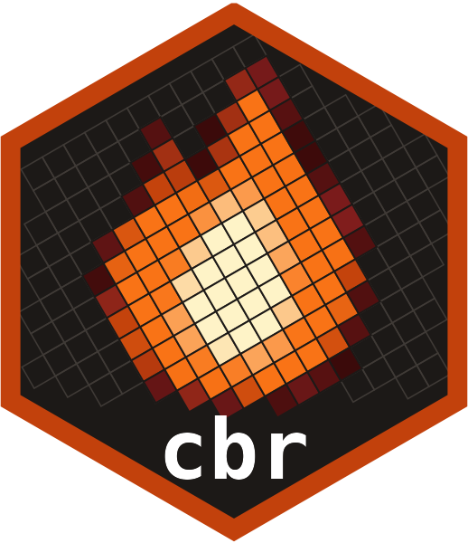

Select the cells that satisfy a spatial predicate
Source:R/cb_predicates.R
cb_cells_where.RdThe cells of a burn where each polygon and the cell (as a closed box)
satisfy a named spatial predicate or a DE-9IM pattern, from the burn's runs
and its relations table (see cb_relate()). Exact: the cells only touched
along a wall or at a corner, which have no burn record, are included where
the predicate holds for them.
Arguments
- x
A
cb_burnobject with arelationstable.- predicate
One of the predicates above. Ignored if
patternis given.- pattern
Optional DE-9IM pattern, nine characters from
T(not empty),F(empty),*(anything) and0,1,2(that dimension), polygon (rows) against cell (columns). A pattern that the matrix of an untouched cell ("FF2FF1212") matches is refused: those cells are the rest of the grid and cannot be listed sparsely.- id
Optional geometry ids to keep.
Value
A data frame with one row per geometry and cell satisfying the
predicate, sorted by id, row and col: row, col, id and
matrix (the DE-9IM string).
Details
Predicates are of the polygon against the cell:
"intersects"they share at least a point. The cells are the exact all-touched set.
"interiors_meet"the polygon covers part of the cell's area.
"covers"no point of the cell is outside the polygon.
"touches"they share boundary points but no area: cells across a wall or a corner from the polygon.
"covered_by"the cell covers the polygon (the polygon lies within the closed cell).
Examples
g <- wk::wkt("POLYGON ((1 1, 3 1, 3 3, 1 3, 1 1))")
b <- cb_burn(g, extent = c(0, 4, 0, 4), dimension = c(4, 4), relate = TRUE)
cb_cells_where(b, "touches")
#> row col id matrix
#> 1 1 1 1 FF2F01212
#> 2 1 2 1 FF2F11212
#> 3 1 3 1 FF2F11212
#> 4 1 4 1 FF2F01212
#> 5 2 1 1 FF2F11212
#> 6 2 4 1 FF2F11212
#> 7 3 1 1 FF2F11212
#> 8 3 4 1 FF2F11212
#> 9 4 1 1 FF2F01212
#> 10 4 2 1 FF2F11212
#> 11 4 3 1 FF2F11212
#> 12 4 4 1 FF2F01212
## the polygon's boundary runs along the cell's boundary
cb_cells_where(b, pattern = "****1****")
#> row col id matrix
#> 1 1 2 1 FF2F11212
#> 2 1 3 1 FF2F11212
#> 3 2 1 1 FF2F11212
#> 4 2 2 1 212F11FF2
#> 5 2 3 1 212F11FF2
#> 6 2 4 1 FF2F11212
#> 7 3 1 1 FF2F11212
#> 8 3 2 1 212F11FF2
#> 9 3 3 1 212F11FF2
#> 10 3 4 1 FF2F11212
#> 11 4 2 1 FF2F11212
#> 12 4 3 1 FF2F11212